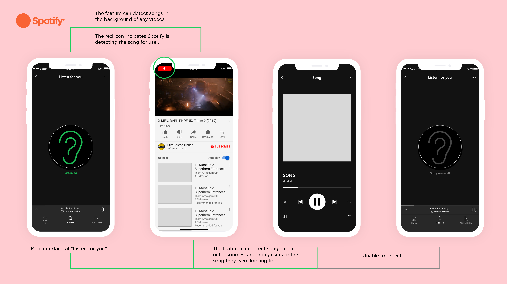
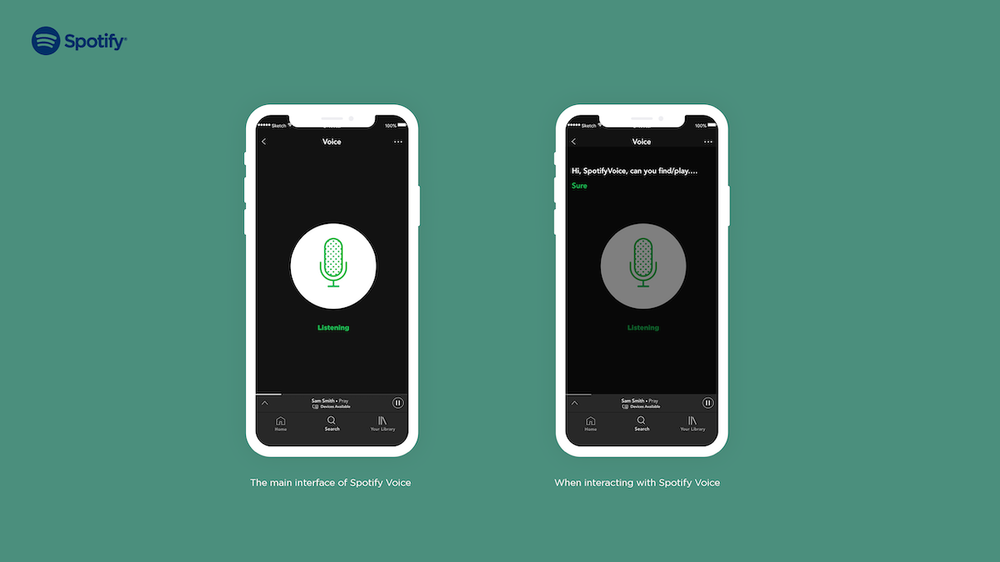

Spotify is a cloud-based music streaming application that provides users with access to millions of songs and other contents from artists all over the world. With Spotify premium, users can play, download music anywhere and anytime they want. Spotify Premium allows users to enjoy its top four features, such as creating similar playlist, discover weekly favourites, genre and moods, as well as daily mixes.
Team
David Gu
My Roles
User research, User testing, UX design, Interaction design
Tools
Figma, Protopie, Illustrator, Photoshop
While we were researching our application, we noticed there was a lot of helpful information online as it is a fully developed app that has been around for quite some time now. Another advantage we had during research was that since one of the team members was already an existing user of Spotify, she had a better understanding of the core elements of the application. However, we struggled a little with researching about the pain points of Spotify. Since Spotify is a fully developed application, it is quite challenging to pinpoint the flaws on it as they are not obvious. Much of the pain points research was based on personal experience and other surveys online.
“Listen for You” is an in-app feature that helps to identify song names, artists and albums based on the beats of the catchy song. Siri on iPhones and Mac does not support third-party app., a simple command like “Play Spotify” will only open up the application.
Spotify Voice functions as an in-app assistant that helps and guides users along the process of enjoying the application. It serves convenience for those who uses wireless earbuds and those who could reach the phone to execute commands.
Reflecting from our research findings, we aim to design a new feature that not only connects
users with music, but also connects it with the existing features seamlessly. Our users use
Spotify in hope of discovering new music efficiently and we kept that in mind throughout the
designing process. With this new feature, users no longer have to go on another app to
detect
songs and go onto Spotify to search for it again. Users are now given the right to enjoy
Spotify
and music without disrupting their experience on the app.
This project provided me a sense of how to improve an application by implementing new
features.
To understand what users need or want, research and survey is necessary. If there is a
chance to
improve this project, I would create an interactive prototype to enhance the understanding
of
our feature project.